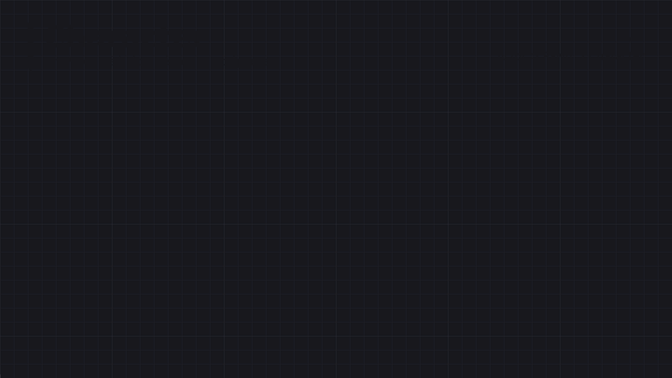
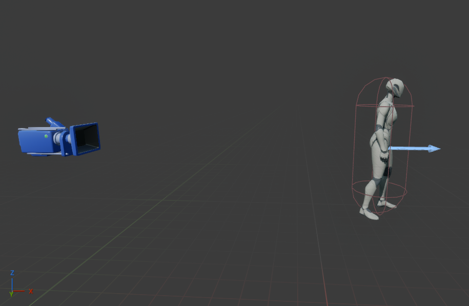

2 · Personnage & Input
Le point de départ classique : un Character à la troisième personne, avec sa caméra, capable de se déplacer via l'Enhanced Input.
Personnage à la troisième personne
Un Character (sous-classe de Pawn déjà équipée pour se déplacer) s'organise en une hiérarchie de composants : un seul se charge de la collision et sert de racine, les autres s'y accrochent.

CharacterMovement et ses réglages.| Composant | Rôle |
|---|---|
CapsuleComponent | volume de collision simplifié — racine du personnage |
SkeletalMeshComponent | le modèle 3D + son squelette, animé par l'Animation Blueprint |
CharacterMovementComponent | marche, chute, saut, natation — déjà fourni par Character |
SpringArm (Camera Boom) | maintient la caméra à distance, la ramène si un mur s'interpose |
CameraComponent (Follow Camera) | le point de vue du joueur, accroché au bout du SpringArm |
Pawn, Character & possession
Un Pawn est un Actor qu'un Controller peut posséder : l'« avatar » (personnage, véhicule, caméra volante, tourelle) vers lequel l'input du joueur — ou les ordres d'une IA — sont envoyés. Un Character n'est qu'un Pawn déjà équipé pour la marche (capsule, mesh, CharacterMovementComponent) ; tout le reste se construit sur un Pawn plus nu.
| Classe parente | Fournit | Bon pour |
|---|---|---|
Pawn | la possession, rien d'autre : ni déplacement, ni collision | véhicule, tourelle, drone, caméra de jeu de stratégie — on ajoute ses composants et son déplacement soi-même |
DefaultPawn | collision sphérique + FloatingPawnMovement (vol libre) | prototype, caméra libre |
SpectatorPawn | vol libre sans collision | mode spectateur (Spectator Class du GameMode) |
Character | + CapsuleComponent, SkeletalMesh, CharacterMovementComponent | humanoïdes qui marchent, sautent, nagent |
WheeledVehiclePawn | véhicule à roues (physique Chaos) | voitures, camions |
La possession
Le PlayerController persiste ; c'est le Pawn qu'il tient en main qui change. À l'apparition, le GameMode fait spawner la Default Pawn Class à l'emplacement d'un PlayerStart, puis le Controller le Possess.
| Nœud / réglage | Rôle |
|---|---|
Possess (Controller) | le Controller prend le contrôle du Pawn : input et caméra lui sont redirigés, l'ancien Pawn est lâché |
UnPossess | lâche le Pawn contrôlé — le Controller n'a plus de Pawn (Get Controlled Pawn → None) |
Event Possessed / Event Unpossessed (dans le Pawn) | réagir à la prise ou à la perte de contrôle (afficher un HUD, ajouter/retirer un Mapping Context) |
Get Controller (Pawn) / Get Controlled Pawn (Controller) | passer de l'un à l'autre |
Get Player Pawn / Get Player Character | le Pawn du joueur 0 — le second renvoie None si ce Pawn n'est pas un Character |
| Auto Possess Player (Pawn posé dans le niveau) | Disabled, Player 0… Player 7 : possédé automatiquement au lancement, sans passer par le GameMode |
| Auto Possess AI + AI Controller Class | Placed in World, Spawned ou les deux : un AIController de la classe choisie prend le Pawn |
Monter dans un véhicule : Get Player Controller → Possess sur le véhicule. Les Mapping Contexts d'Enhanced Input appartiennent au joueur local, pas au Pawn : retirer celui du personnage et ajouter celui du véhicule dans Event Unpossessed / Event Possessed. Le personnage laissé derrière n'est pas détruit — il reste dans le niveau, inerte.
Dès que le joueur possède un Pawn qui n'est pas un Character (véhicule, caméra), Get Player Character renvoie None et provoque des Accessed None en cascade. Utiliser Get Player Pawn puis un Cast (ou une interface), ou garder une référence dans une variable.
Caméra : SpringArm & CameraComponent
La caméra 3e personne repose sur deux composants : le SpringArm est un bras attaché à la capsule, et la Camera est accrochée à son extrémité (socket SpringEndpoint). C'est le bras qui tourne avec la souris ; la caméra suit sans rien calculer elle-même.

SpringArm qui fixent cette distance sont détaillés ci-dessous.Réglages du SpringArm
| Propriété | Effet | Valeur typique |
|---|---|---|
Target Arm Length | distance caméra ↔ personnage | 300–400 (≈ 3–4 m) |
Socket Offset | décale la caméra au bout du bras (dans l'espace du bras) — vue par-dessus l'épaule | (0, 60, 60) |
Target Offset | décale le point de départ du bras (espace monde, ne tourne pas) | hauteur de la tête |
Use Pawn Control Rotation | le bras suit la rotation du contrôleur (souris / stick droit) | coché |
Inherit Pitch / Yaw / Roll | quels axes de la rotation du contrôleur le bras reprend | Roll souvent décoché |
Do Collision Test | raccourcit le bras quand un obstacle s'interpose (Probe Size, Probe Channel) | coché |
Enable Camera Lag / Lag Speed | la caméra rattrape le personnage avec un léger retard — mouvement plus doux | 10–15 |
Enable Camera Rotation Lag | même chose pour la rotation | optionnel |
Réglages de la caméra et du personnage
| Où | Propriété | Pour une caméra « orbitale » classique |
|---|---|---|
| Camera | Use Pawn Control Rotation | décoché — c'est déjà le SpringArm qui tourne |
| Camera | Field Of View | 90 par défaut ; plus bas = effet zoom |
| Character (Class Defaults) | Use Controller Rotation Yaw | décoché — le corps ne pivote pas avec la souris |
| CharacterMovement | Orient Rotation to Movement | coché — le personnage se tourne vers sa direction de marche |
| CharacterMovement | Rotation Rate | (0, 0, 500) — vitesse de ce demi-tour (Z = yaw) |
Pour un personnage qui regarde toujours devant la caméra (tir, lock-on) : décocher Orient Rotation to Movement et cocher Use Controller Desired Rotation (ou Use Controller Rotation Yaw). On bascule souvent entre les deux modes à l'exécution, en même temps qu'un Socket Offset et un FOV plus serrés.
Faire tourner la caméra : IA_Look
IA_Look est une action Axis2D liée à Mouse XY 2D-Axis et au stick droit dans le Mapping Context. Dans l'Event Graph :
| Valeur | Nœud | Effet |
|---|---|---|
Action Value X | Add Controller Yaw Input | rotation gauche / droite |
Action Value Y | Add Controller Pitch Input | rotation haut / bas |
Inverser l'axe Y : ajouter un modificateur Negate (Y seulement) sur la touche dans le Mapping Context, ou multiplier par -1. Limiter le pitch : Get Player Camera Manager → View Pitch Min / Max (par défaut ±89.9°). Zoom molette : une action sur Mouse Wheel Axis qui modifie Target Arm Length, avec Clamp + FInterp To pour une transition douce. Changer de caméra (cinématique, caméra fixe) : Set View Target with Blend sur le PlayerController.
Enhanced Input : Input Actions & Mapping Context
Le système moderne (Unreal 5+) sépare la touche physique de l'action logique : un Input Mapping Context associe des touches à des Input Actions (IA_Move, IA_Look, IA_Jump) ; le Blueprint du personnage ne réagit qu'aux actions, jamais aux touches directement.
| Élément | Rôle |
|---|---|
Input Action (asset) | nomme une intention (« se déplacer »), avec son type de valeur (Axis2D pour IA_Move, bouton pour IA_Jump) |
Input Mapping Context | fait le lien touches ↔ actions ; plusieurs contextes peuvent être ajoutés/retirés (ex. un contexte « en véhicule » différent) |
Nœud Enhanced Input Action | dans l'Event Graph du personnage, se déclenche quand l'action est déclenchée (Triggered) — sort la valeur (ex. un Vector2D pour le déplacement) |
Add Movement Input | applique la valeur reçue dans une direction (avant/droite du contrôleur), consommé chaque frame par le CharacterMovementComponent |
Le Mapping Context s'ajoute typiquement dans BeginPlay du PlayerController (ou du personnage), via Add Mapping Context sur le sous-système Enhanced Input Local Player Subsystem — sans ça, les Input Actions restent silencieuses.
La chaîne de traitement d'une touche
Entre l'appui physique et le Blueprint, la valeur traverse deux étages configurables dans l'Input Mapping Context : des Modifiers qui la transforment, des Triggers qui décident quand elle compte.
Les Modifiers : manipuler la valeur
| Modifier | Fait | Quand l'utiliser |
|---|---|---|
Negate | inverse le signe de la valeur | la touche Q d'un axe gauche / droite ; l'inversion de l'axe Y de la caméra |
Swizzle Input Axis Values | échange les composantes X, Y, Z | mapper des valeurs sur des axes différents (une touche « avant » qui alimente l'axe Y) |
Dead Zone | ignore les valeurs sous un seuil | les sticks analogiques, qui ne reviennent pas parfaitement à 0 |
Scalar | multiplie la valeur | régler la sensibilité de la souris |
Smooth | lisse la valeur dans le temps | adoucir une visée nerveuse |
FOV Scaling | adapte la sensibilité au champ de vision | garder la même sensation en vue zoomée |
To World Space | convertit l'entrée en repère monde | déplacer selon le monde plutôt que selon l'acteur |
Les modifiers s'appliquent de haut en bas. Un Dead Zone placé après un Scalar ne filtre pas les mêmes valeurs que s'il était placé avant.
Les Triggers : quand traiter la valeur
| Trigger | Se déclenche… | Exemple |
|---|---|---|
(aucun) / Down | à chaque frame tant que la touche est enfoncée | un sprint, une visée maintenue |
Pressed | une seule fois, à l'appui | un saut, une interaction |
Released | une seule fois, au relâchement | valider un choix au lâcher de touche |
Hold | quand la durée de maintien atteint le seuil | une action longue (maintenir E 0,6 s pour interagir) |
Hold and Release | au relâchement, si le seuil a été atteint | un tir chargé |
Pulse | à intervalle régulier, pendant le maintien | une arme automatique |
Tap | au relâchement, si l'appui a été bref | une esquive ; un appui bref distingué d'un appui long |
Chord Action | si une autre action est déclenchée en même temps | une combinaison de touches |
Combo | quand une séquence d'actions est réussie | un enchaînement de combat |
Pour utiliser deux Triggers sur une même touche (appui bref = esquive, appui long = sprint), créer deux Input Actions associées à cette touche, chacune avec son trigger.
Les états d'un trigger
Le nœud Enhanced Input Action expose cinq pins d'exécution : l'état de l'évaluation du trigger, pas seulement son aboutissement.
| Pin | Signifie | Exemple |
|---|---|---|
Triggered | les conditions du trigger sont réunies | l'action : sauter, tirer, ramasser |
Started | l'évaluation commence | amorcer : jouer un son d'armement, afficher une jauge |
Ongoing | l'évaluation est en cours, pas encore satisfaite | faire progresser une jauge de charge |
Canceled | l'évaluation s'arrête sans avoir abouti | défaire : vider la jauge, jouer un son d'annulation |
Completed | l'évaluation se termine après avoir abouti | remettre l'état à zéro |
Ces cinq états remplacent les béquilles habituelles (Do Once, un timer pour mesurer un maintien, un booléen « est en train de charger ») : le moteur sait déjà où en est l'action.
Les Mapping Contexts : plusieurs IMC, même touche
Un Input Mapping Context relie les touches physiques à vos Input Actions. Il s'ajoute et se retire à l'exécution, sur le Local Player. Plusieurs contextes peuvent coexister ; chacun a une priorité.
IA_Interact n'est jamais vue. ESPACE n'y est pas mappée : elle redescend et déclenche IA_Jump.Il ne masque que les touches qu'il mappe lui-même ; tout le reste passe au travers. Un contexte prioritaire qui ne mappe que E laisse donc le personnage sauter. Erreur fréquente : croire qu'ajouter un contexte coupe les précédents.
À pied, E ouvre une porte ; en véhicule, E sort du véhicule ; en télékinésie, E attrape. Ce n'est pas au Blueprint de trier, c'est au contexte. Et comme l'IMC vit sur le Local Player et non sur le Pawn, il survit au changement de Pawn : pratique en montant dans un véhicule, piégeux si l'on oublie de retirer un contexte avant de changer de personnage.
Exemple type : ajouter IMC_Grab quand un objet saisissable entre dans la sphère de détection, le retirer dès qu'on s'en éloigne — la touche de saisie n'existe que pendant ce temps. Un contexte ajouté et jamais retiré provoque des comportements incompréhensibles plus tard (le personnage qui saisit des objets alors qu'il n'y a plus rien à portée) : écrire le Remove Mapping Context en même temps que le Add.
Boîtes de collision
La capsule du personnage n'est qu'un cas particulier : n'importe quel Actor peut recevoir des formes de collision invisibles en jeu. Elles servent à deux choses différentes : bloquer (un mur, le sol) ou détecter (une zone de déclenchement, un objet à ramasser).
| Composant | Forme | Usage typique |
|---|---|---|
Box Collision | boîte | zone de déclenchement (trigger), porte, zone de dégâts |
Sphere Collision | sphère | rayon de détection, portée d'interaction, pickup |
Capsule Collision | capsule | personnages, PNJ |
collision du Static Mesh | simplifiée (simple) ou polygone exact (complex) | décor : définie dans l'éditeur du mesh |
Réponses : Ignore, Overlap, Block
Chaque composant a un Object Type (ce qu'il est : WorldStatic, WorldDynamic, Pawn, PhysicsBody…) et une réponse pour chaque canal (comment il réagit aux autres). Quand deux objets se rencontrent, c'est la réponse la plus faible des deux qui gagne :
| A \ B | Ignore | Overlap | Block |
|---|---|---|---|
| Ignore | rien | rien | rien |
| Overlap | rien | overlap | overlap |
| Block | rien | overlap | block |
| Réglage (panneau Collision) | Rôle |
|---|---|
Collision Presets | combinaisons prêtes : BlockAll, OverlapAllDynamic, Trigger, Pawn, NoCollision… ou Custom pour tout régler à la main |
Collision Enabled | No Collision, Query Only (overlaps, traces), Physics Only, Query and Physics |
Generate Overlap Events | doit être coché sur les deux composants pour recevoir les événements d'overlap |
Can Character Step Up On | un Character peut-il monter dessus comme sur une marche ? (Yes / No / Owner) — à mettre sur No pour un petit objet physique que le personnage ne doit pas escalader |
Simulation Generates Hit Events | nécessaire pour On Component Hit quand l'objet simule la physique |
| Canaux personnalisés | Project Settings → Collision : nouveaux Object Channels (ex. Projectile) ou Trace Channels (ex. Interact) |
Réagir : événements de collision
| Événement | Déclenché quand… |
|---|---|
On Component Begin Overlap | un autre objet entre dans la zone (réponse Overlap) |
On Component End Overlap | il en sort |
On Component Hit | un choc bloquant a lieu (sort le point d'impact et la normale) |
Event ActorBeginOverlap | même chose, mais pour n'importe quel composant de l'Actor |
L'événement fournit l'Other Actor. Avant d'agir, vérifier sa nature : comparer à Get Player Character, Cast To BP_Character, Actor Has Tag, ou Does Implement Interface. Sinon une caisse poussée dans la zone déclenche aussi la porte.
Décocher Hidden in Game sur la boîte pour la voir en jeu, ou taper show collision dans la console (touche ²/~). Les traces (Line Trace by Channel, Sphere Trace) sont l'autre moitié du système : un rayon qui teste un canal — c'est le canal Camera que le SpringArm utilise pour sa sonde anti-mur, et Visibility pour viser un objet.
Canaux et presets personnalisés, collision des meshes, traces, physique, Physical Material, ragdoll : tout cela est détaillé dans 7 · Collisions & physique.